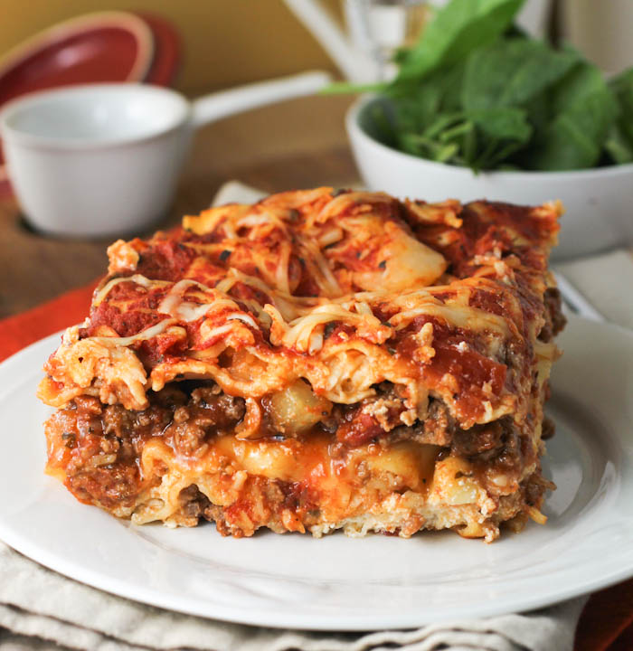

Lasanga

Description
Ingredients
1 package lasanga noodles
½ of shredded mozzarella cheese
½ of shredded Chdder cheese
Steps on how to make
Bring a large pot of lightly salted water to a boil. Add pasta and cook for 8 to 10 minutes or until al dente; drain.
Preheat oven to 350 degrees F (175 degrees C). In a large skillet over medium-high heat, brown beef and season with salt and pepper; drain. Stir in spaghetti sauce and garlic and simmer 5 minutes.
In a medium bowl, combine mozzarella, Cheddar and ricotta; stir well. In 9x13 inch pan, alternate layers of noodles, meat mixture and cheese mixture until pan is filled.
Bake in preheated oven for 30 minutes, or until cheese is melted and bubbly.
Homepage